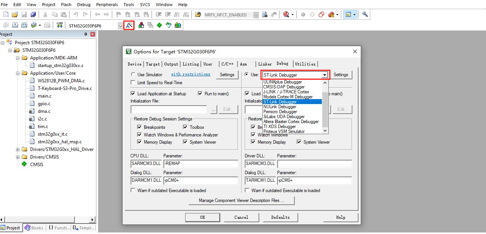

中文 简体
中文 简体LILYGO T-Keyboard S3 Pro

重要提示：使用时必须要有主机，从机通过磁吸接口与主机连接。
版本迭代:
| Version | Update date | Update description |
|---|---|---|
| T-Keyboard-S3-Pro_MCU_V1.1 | 2024-09-05 | Original version |
| T-Keyboard-S3-Pro_Keyboard_V1.1 | 2024-09-05 | Original version |
| T-Keyboard-S3-Pro_Magnet_Female_V1.0 | 2024-09-05 | Original version |
| T-Keyboard-S3-Pro_Magnet_Male_V1.0 | 2024-09-05 | Original version |
| T-Keyboard-S3-Pro_Keyboard_LCD_FPC_V1.0 | 2024-09-05 | Original version |
购买链接
| Product | Main SOC | Co-processor | FLASH | PSRAM | Link |
|---|---|---|---|---|---|
| T-Keyboard S3 Pro | ESP32-S3 | STM32G030 | 16M | 8M (Octal SPI) | LILYGO Mall |
目录
描述
T-Keyboard-S3 Pro 是一款基于双 MCU 架构（ESP32-S3 + STM32G030F6P6）的高端可编程键盘，专为开发者与专业用户打造。其核心亮点包括 4 块 0.85 英寸 RGB LCD 屏幕（分辨率 128x128），支持多屏独立显示快捷指令、系统状态或动态交互界面；4 个热插拔机械按键兼容自定义轴体，搭配 RGB WS2812 灯效与旋转编码器，可编程背光模式及精准参数调节（如音量、滚动控制）。硬件上，主控 ESP32-S3 配备 16MB Flash + 8MB PSRAM，支持 Wi-Fi/蓝牙通信与复杂逻辑运算，外置 STM32 芯片辅助处理实时输入任务，确保低延迟响应。扩展性方面，提供 STEMMA QT/Qwlic 接口及磁吸扩展能力，可连接多个从机设备，打造多功能控制终端。
预览
实物图

引脚图

模块
主要的MCU
- 模块：ESP32-S3-WROOM-1
- 芯片：ESP32-S3-R8
- PSRAM：8M (Octal SPI)
- FLASH：16M
- 相关资料：
ESP32-S3-WROOM-1_datasheet
- 依赖库：
Arduino_DriveBus-1.1.16
次要的MCU
- 芯片：STM32G030F6P6
- SRAM：8 Kbytes
- FLASH：64 Kbytes
- 相关资料：
STM32G030F6_datasheet
屏幕
- 屏幕型号：N085-1212TBWIG06-C08
- 尺寸：0.85英寸
- 分辨率：128x128px
- 屏幕类型：TFT
- 驱动芯片：GC9107
- 使用总线通信协议：标准SPI
- 其他说明：所有屏幕的RST、DC、MOSI、SCLK、BL引脚各共用一条总线，初始化复位时候所有屏幕一起复位，选择不同CS线即可控制不同的屏幕刷新数据
- 相关资料：
GC9107_DataSheet_V1.2
- 依赖库：
TFT_eSPI-2.5.0
lvgl-8.3.5
Arduino_GFX-1.3.7
热插拔按键
- 规格：选用的热插拔连接器是Kailh公司的连接器，两引脚间距是6.35MM，满足间距为6.35mm的热插拔针脚按键都可适用
- PCB连接：下拉使能低电平作为判断信号，主机的KEY5复用为BOOT-0作为系统上电模式选择，默认有一个10K上拉电阻，同样以低电平作为判断信号，软件内必须配置其引脚为内部上拉才能稳定使用
- 其他说明：因为要连接屏幕，所以请务必选择中间有开孔的热插拔按键，间距应该大于排线宽度7MM以上
板载LED
- 芯片：WS2812C
- 相关资料：
WS2812C-2020
旋转编码器
- 描述：四脚铜顶针旋钮
概述
| 组件 | 描述 |
|---|---|
| 主处理器 | ESP32-S3R8 Dual-core LX7 microprocessor |
| 协处理器 | STM32G030F6P6 |
| Flash | 16MB (ESP32-S3) + 64KB (STM32) |
| PSRAM | 8MB (ESP32-S3) + 8KB (STM32) |
| 屏幕 | 4×0.85英寸 GC9107 TFT LCD (128×128) |
| 按键 | 4×热插拔机械按键 + 旋转编码器 |
| RGB灯效 | WS2812C |
| GPS | MIA-M10Q |
| 存储 | TF卡 |
| 无线 | Wi-Fi 802.11 b/g/n + BLE 5 |
| USB | 1 × Type-C接口 |
| 拓展接口 | 2×QWIIC + 4×磁吸接口 |
| 按键 | RST + BOOT + 4×屏幕按键 |
| UI框架 | LVGL |
| 尺寸 | 164×46×42mm |
快速开始
使用注意事项
- I2C通信扩展：默认固件配置为 I2C 通信扩展模式。扩展从设备时，必须确保每个设备具有唯一的 I2C 地址，避免地址冲突。
- 设备数量限制：最多可连接 6 个设备。连接多个设备时，需要将板载 LED 的最大亮度调低至 10。
- 扩展方向限制：主控板左右两侧各只能扩展一个设备，向下最多可扩展两个设备（USB 接口会阻碍扩展），最多可形成 2×3 的网格布局。
根据版本选择对应的示例程序。
ESP32S3 主机设备软件引导
| Branch | [PlatformIO (arduino-espressif32_v6.5.0)][Arduino IDE (arduino-esp32-lib_v2.0.14)] Support |
Description |
|---|---|---|
| arduino-esp32-libs_v2.0.14 | |
基于Arduino语言库版本为v2.0.14编写的ESP32S3相关示例程序 |
示例
| Example | Description | Picture |
|---|---|---|
| GFX | ||
| IIC_Scan_2 | ||
| Keyboard | ||
| Original_Test | ||
| Original_Test_2 | 出厂初始测试文件 | |
| Rotary_Encoder | ||
| T-Keyboard-S3-Pro_IIC_Command | ||
| T-Keyboard-S3-Pro_IIC_Scan | ||
| Shortcut-Keys | ||
| Lvgl_UI | 出厂初始测试文件 |
| Firmware | Description | Picture |
|---|---|---|
| Original_Test_2 | 主机设备出厂初始测试文件 | |
| Lvgl_UI | 主机设备出厂初始测试文件 |
PlatformIO
安装VisualStudioCode，根据你的系统类型选择安装。
打开VisualStudioCode软件侧边栏的“扩展”（或者使用Ctrl+Shift+X打开扩展），搜索“PlatformIO IDE”扩展并下载。
在安装扩展的期间，你可以前往GitHub下载程序，你可以通过点击带绿色字样的“<> Code”下载主分支程序，也通过侧边栏下载“Releases”版本程序。
扩展安装完成后，打开侧边栏的资源管理器（或者使用Ctrl+Shift+E打开），点击“打开文件夹”，找到刚刚你下载的项目代码（整个文件夹），点击“添加”，此时项目文件就添加到你的工作区了。
打开项目文件中的“platformio.ini”（添加文件夹成功后PlatformIO会自动打开对应文件夹的“platformio.ini”）,在“[platformio]”目录下取消注释选择你需要烧录的示例程序（以“default_envs = xxx”为标头），然后点击左下角的“√”进行编译，如果编译无误，将单片机连接电脑，点击左下角“→”即可进行烧录。
{kind=link}
{kind=link}
Arduino
安装Arduino，根据你的系统类型选择安装。
打开项目文件夹的“example”目录，选择示例项目文件夹，打开以“.ino”结尾的文件即可打开Arduino IDE项目工作区。
打开右上角菜单栏->选择“开发板”->“开发板管理器”，找到或者搜索“esp32”，下载作者名为"Espressif Systems"的开发板文件。接着返回“开发板”菜单栏，选择"ESP32 Arduino"开发板下的开发板类型，选择的开发板类型由“platformio.ini”文件中以[env]目录下的“board = xxx”标头为准，如果没有对应的开发板，则需要自己手动添加项目文件夹下“board”目录下的开发板。
打开菜单栏“[文件]”->“[首选项]”，找到“[项目文件夹位置]”这一栏，将项目目录下的“libraries”文件夹里的所有库文件连带文件夹复制粘贴到这个目录下的“libraries”里边。
在 "工具 "菜单中选择正确的设置，如下表所示。
ESP32-S3
| Setting | Value |
|---|---|
| Board | ESP32S3 Dev Module |
| Upload Speed | 921600 |
| USB Mode | Hardware CDC and JTAG |
| USB CDC On Boot | Enabled |
| USB Firmware MSC On Boot | Disabled |
| USB DFU On Boot | Disabled |
| CPU Frequency | 240MHz (WiFi) |
| Flash Mode | QIO 80MHz |
| Flash Size | 16MB (128Mb) |
| Core Debug Level | None |
| Partition Scheme | Default (6.25MB APP/3.43MB SPIFFS) |
| PSRAM | OPI PSRAM |
| Arduino Runs On | Core 1 |
| Events Run On | Core 1 |
选择正确的端口。
点击右上角“[√]”进行编译，如果编译无误，将单片机连接电脑，点击右上角“[→]”即可进行烧录。
引脚总览
| IIC_1引脚 | ESP32S3引脚 |
|---|---|
| SDA | IO42 |
| SCL | IO2 |
| IIC_2引脚（外扩） | ESP32S3引脚 |
|---|---|
| SDA | IO6 |
| SCL | IO7 |
| LCD屏幕引脚 | ESP32S3引脚 |
|---|---|
| MOSI | IO40 |
| SCLK | IO41 |
| DC | IO39 |
| RST | IO38 |
| BL | IO1 |
| 旋转编码器引脚 | ESP32S3引脚 |
|---|---|
| KNOB_DATA_A | IO4 |
| KNOB_DATA_B | IO5 |
| KNOB_DATA_KEY | IO0 |
STM32 从机设备软件引导
| Branch | [STM32CubeMX (stm32cubeg0-firmware-package_v1.6.2)][ARM Keil μVision5 (Keil.STM32G0xx_DFP.1.4.0.pack)] Support |
Description |
|---|---|---|
| stm32cubeg0-firmware-package_v1.6.2 | |
基于stm32cubeg库版本为v1.6.2、芯片库版本为v1.4.0编写的STM32相关示例程序 |
示例支持
| Example | Description | Picture |
|---|---|---|
| KEY | ||
| Original_Test | 出厂初始测试文件 | |
| T-Keyboard-S3-Pro_IIC_Command | ||
| WS2812B |
| Firmware | Description | Picture |
|---|---|---|
| Slave_0x01_Original_Test_V1.0.0 | 出厂时从机设备0x01的初始测试文件 | |
| Slave_0x02_Original_Test_V1.0.0 | 出厂时从机设备0x01的初始测试文件 | |
| Slave_0x03_Original_Test_V1.0.0 | 出厂时从机设备0x01的初始测试文件 | |
| Slave_0x04_Original_Test_V1.0.0 | 出厂时从机设备0x01的初始测试文件 | |
| Slave_0x05_Original_Test_V1.0.0 | 出厂时从机设备0x01的初始测试文件 | |
| Slave_0x06_Original_Test_V1.0.0 | 出厂时从机设备0x01的初始测试文件 |
STM32CubeMX
安装JAVA，安装STM32CubeMX前需要安装JAVA。
安装STM32CubeMX，根据你的系统类型选择安装。
打开STM32CubeMX，找到菜单栏中的“Help->Manage embedded software packages”打开软件包管理，选择“STM32G0”的软件包，下载按安装对应版本的软件包即可。
4. 以上准备工作完成后你就可以使用STM32CubeMX来配置你的工程项目了。示例代码中有包含STM32CubeMX配置好的项目文件，打开示例文件夹中后缀名为“.ioc”的文件就是。
ARM Keil μVision5
安装ARM Keil μVision5，根据你的系统类型选择安装。
打开Keil，找到菜单栏的“Pack Installer”

选项打开软件包管理器，在软件包管理器页面搜索“STM32G0”，选择1.4.0版本的软件库安装。
- 安装好使用的调试器驱动，调试器的支持类型可以在Keil的菜单栏的“Options for”中的“Debug”栏中找到，此外还需要设置好“programming algorithm”如下图所示。


板子上的STM32G0的调试口在“T-Keyboard-S3-Pro_Keyboard”板子的背面如下图

- 打开示例目录下的任意一个后缀名为“.uvprojx”的示例，点击菜单栏的“Rebuild”构建并插上调试器连接好设备点击“Download”下载程序

STM32CubeProgrammer
安装STM32CubeProgrammer，根据你的系统类型选择安装。
打开STM32CubeMX，选择正确的调试器，这里以STLINK为例子， 如下图红框所示配置，选择要下载的firmware文件，点击“Start Programming”开始下载。使用UART下载同理。

板子上的UART的调试口在“T-Keyboard-S3-Pro_Keyboard”板子的背面如下图

引脚总览
| IIC引脚 | STM32G0引脚 |
|---|---|
| SDA | PC14/PB9 |
| SCL | PB7/PB8 |
| KEY引脚 | STM32G0引脚 |
|---|---|
| KEY1 | PA1 |
| KEY2 | PA0 |
| KEY3 | PC15 |
| KEY4 | PB3/PB4/PB5/PB6 |
| KEY5 | PA12[PA10] |
| LCD屏幕引脚 | STM32G0引脚 |
|---|---|
| LCD_CS1 | PA4 |
| LCD_CS2 | PA11[PA9] |
| LCD_CS3 | PB0/PB1/PB2/PA8 |
| LCD_CS4 | PA6 |
| LCD_CS5 | PA5 |
| LED灯引脚 | STM32G0引脚 |
|---|---|
| WS2812B_DATA | PA7 |
常见问题
Q. T-Keyboard S3 Pro的主要特点是什么？
A. 这是一款高端可编程键盘，具有4块独立LCD屏幕、热插拔机械按键、RGB灯效、旋转编码器和强大的双MCU架构，支持多设备磁吸扩展。Q. 如何扩展从机设备？
A. 通过磁吸接口连接从机设备，最多支持6个设备组成2×3网格布局。注意每个从机必须有唯一的I2C地址。Q. 热插拔机械按键支持哪些轴体？
A. 支持标准的热插拔机械轴体，兼容大多数MX结构的机械轴。Q. 多屏幕显示如何工作？
A. 4块屏幕可以独立显示不同的内容，如系统状态、快捷指令、媒体控制等，通过SPI接口驱动。Q. 双MCU架构有什么优势？
A. ESP32-S3处理复杂的图形界面和无线通信，STM32负责实时输入处理，确保低延迟的按键响应。Q. 扩展多个设备时需要注意什么？
A. 连接多个设备时需要将LED亮度调低至10，并注意扩展方向限制（左右各1个，向下最多2个）。
项目
- SCH_T-Keyboard-S3-Pro_MCU_V1.1
- SCH_T-Keyboard-S3-Pro_Keyboard_V1.1
- SCH_T-Keyboard-S3-Pro_Magnet_Female_V1.0
- SCH_T-Keyboard-S3-Pro_Magnet_Male_V1.0
- SCH_T-Keyboard-S3-Pro_Keyboard_LCD_FPC_V1.0